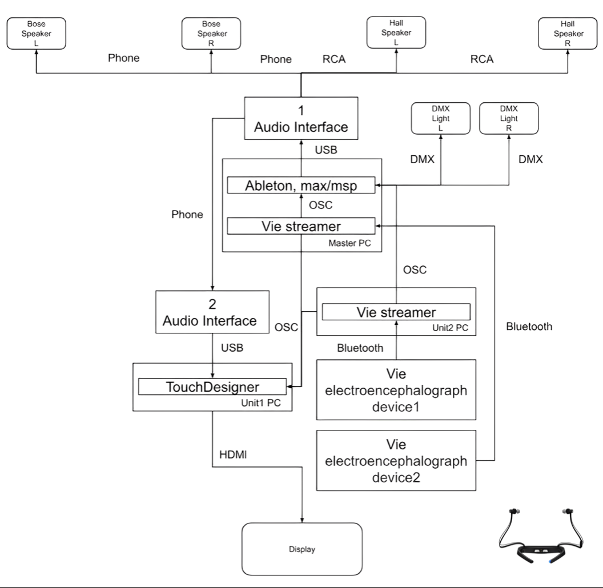

Artificial Heart Brain Waves

| This work depicts the internal beauty of humans
using brainwaves, the heart, and an artificial heart valve as its themes.
Brainwaves were measured in real-time during the performance using a brainwave electroencephalograph device provided by VIE Co., Ltd, along with its dedicated app, Vie Streamer. The dynamic values obtained were used to modulate the Note numbers of the accompanying sounds. Furthermore, the real-time measured brainwave data was fed into a machine learning model running on Max to train it. The model generated inference values indicating to what extent the brainwaves were induced next. These dynamic values were then used to modulate the Gain of the accompanying sounds. It was a performance that adopted an experimental approach, where the sound output increased when it was inferred that brainwaves were more strongly induced. This was achieved by real-time measurement of brainwaves, training a machine learning model, and using it to modulate the sound output. DMX (Digital Multiplex) was controlled in a setup where MIDI was triggered in sync with the audio sequence using Ableton and Max/MSP. The MIDI output triggered cues, and when MIDI signals were generated, commands were sent to activate DMX, establishing a system to control and coordinate the lighting effects. Sound Director: Keigo Yoshida Visual Director: Sogen Handa 3D Modeler: Nina Watanabe Lighting Design: Takuma Kikuchi / Keigo Yoshida Brain science supervision: Keigo Yoshida Artificial Heart sound provide: Tomotaka Miyagawa |
